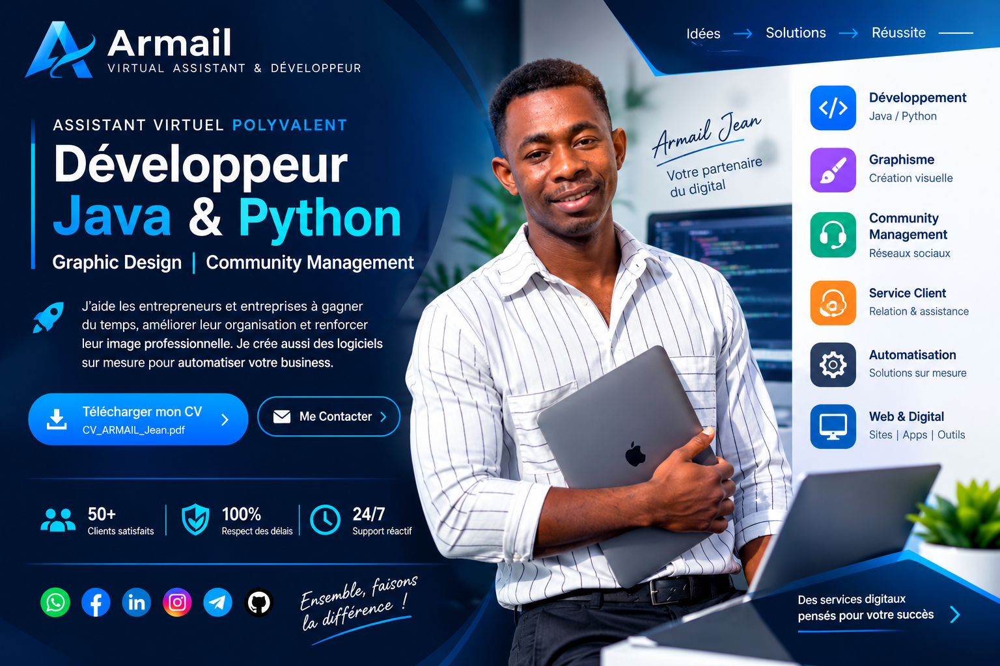

Programmation
C/C++, Java, Python, JavaScript, PHP et Octave.
JavaPythonC/C++PHPJavaScriptOctave
ARMAIL Jean — Master 1 en Génie informatique, avec une expérience en installation, configuration et maintenance de réseaux Wi-Fi et d'équipements MikroTik.

Titulaire d'une Licence en Mathématiques et Informatique, avec un parcours en Master 1 Génie informatique à l'Université de Toamasina.
Solides bases en algorithmique, programmation et analyse mathématique, complétées par une expérience de terrain en réseaux Wi-Fi.
Les compétences techniques indiquées dans mon CV.
C/C++, Java, Python, JavaScript, PHP et Octave.
Conception d'interfaces et développement web avec les technologies maîtrisées.
Travail avec les données, requêtes SQL et formats d'échange.
Installation, configuration, diagnostic et optimisation de réseaux Wi-Fi.
Outils de développement, versionnement et conception.
Outils bureautiques et bases en infographie.
Participation aux opérations de recensement · Mai 2024.
Supervision et suivi des mobilisateurs durant les opérations · Septembre 2023.
Saisie et enregistrement de données · Avril 2023.
Réception des litchis lors des campagnes saisonnières.
Projets mentionnés dans mon CV, présentés avec leur technologie principale.
Application de conception de plans de maison en 2D développée en Java.
JavaApplication de gestion de pharmacie développée en Java.
JavaApplication de traitement d'images développée en Octave avec interface graphique.
Octave · GUIGestion des fournisseurs, produits et ventes avec exportation des données en JSON, Excel et PDF.
Python · XML · JSON · Excel · PDFProjet académique réalisé en langage C.
CProjet académique consacré aux calculs matriciels.
C++Faculté des Sciences et Technologies · Université de Toamasina
Formation complémentaire.
Faculté des Sciences et Technologies · Université de Toamasina
Lycée Horace François · Antalaha
CEG Maherifody · Antalaha
Catégories A et B.
Pour une opportunité, un projet informatique ou une question, contactez-moi directement.
Consultez mon parcours complet, mes compétences, mes expériences et mes projets.
Télécharger le CV